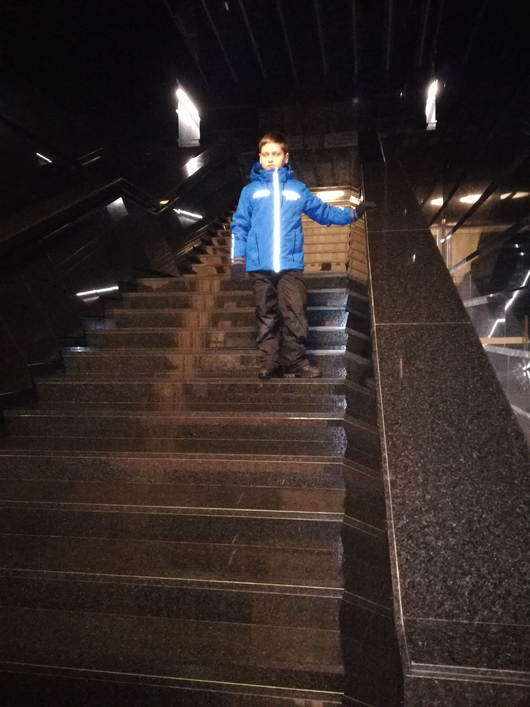

МЕНОРА


Музей «Память еврейского народа и Холокост в Украине» — третий в мире по величине мемориальный комплекс, посвященный Холокосту. Музей расположился на трех этажах центра «Менора» и состоит из четырех основных залов. Общая площадь экспозиции составляет около 3 тыс. кв. м. Первый зал Музея «Память еврейского народа и Холокост в Украине» состоит из двух частей и посвящен традициям иудаизма, а также особенностям жизни евреев в городах и местечках. Самый большой зал Музея посвящен Холокосту, эта экспозиция занимает более 800 кв. м. За залом истории Холокоста следует «Зал памяти — зал имен». У выхода из Музея гости могут увидеть инсталляцию «Разлом мира», напоминающую о катастрофе цивилизации после прихода к власти нацистов. С момента открытия центр «Менора» сформировал свои цели и ценности, которых неуклонно придерживается в разных сферах своей деятельности.